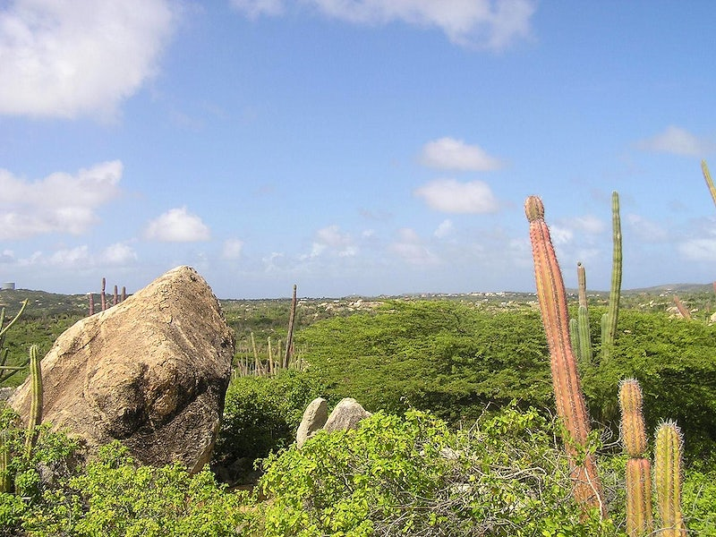
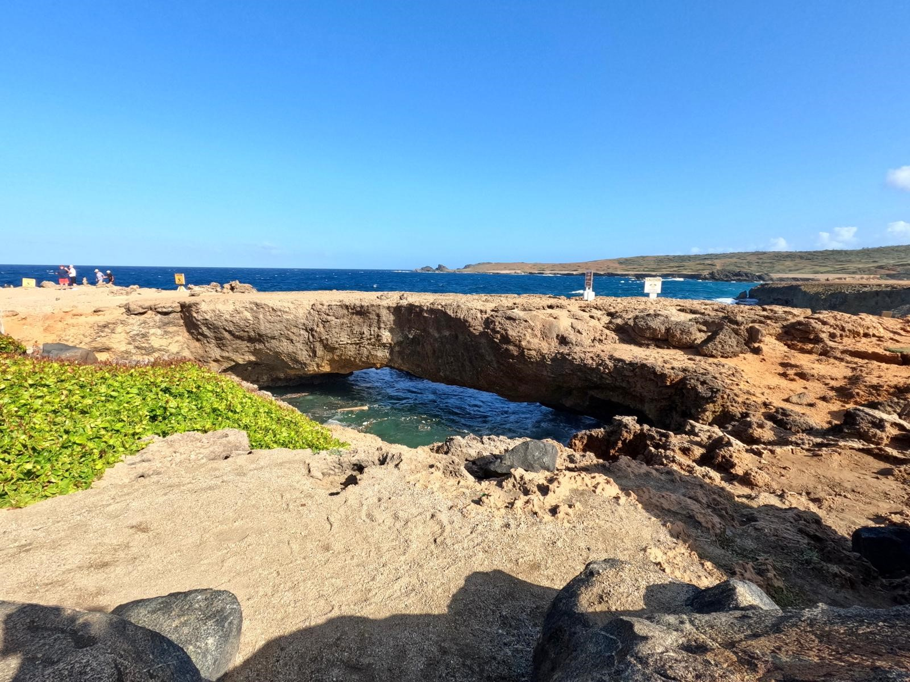
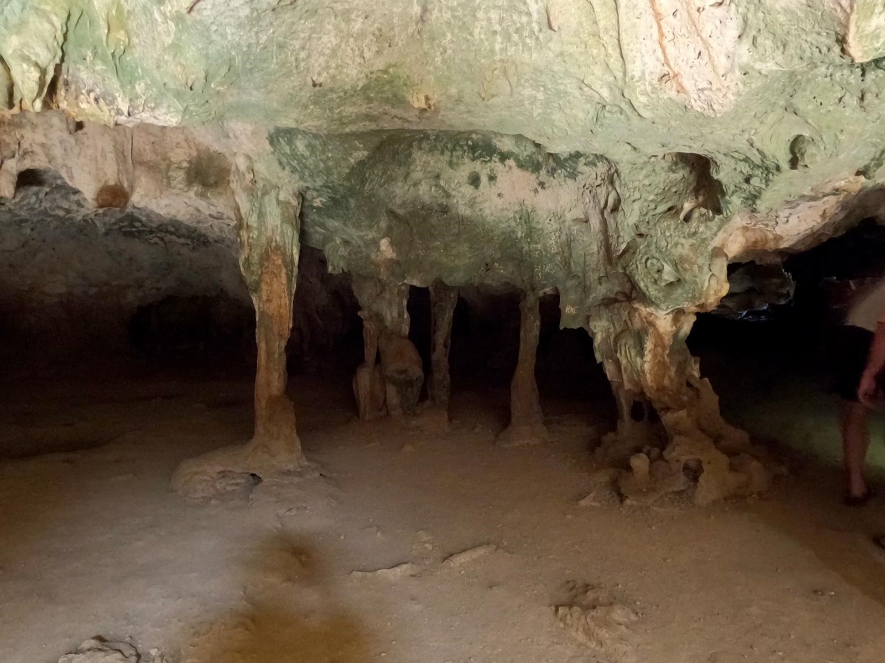
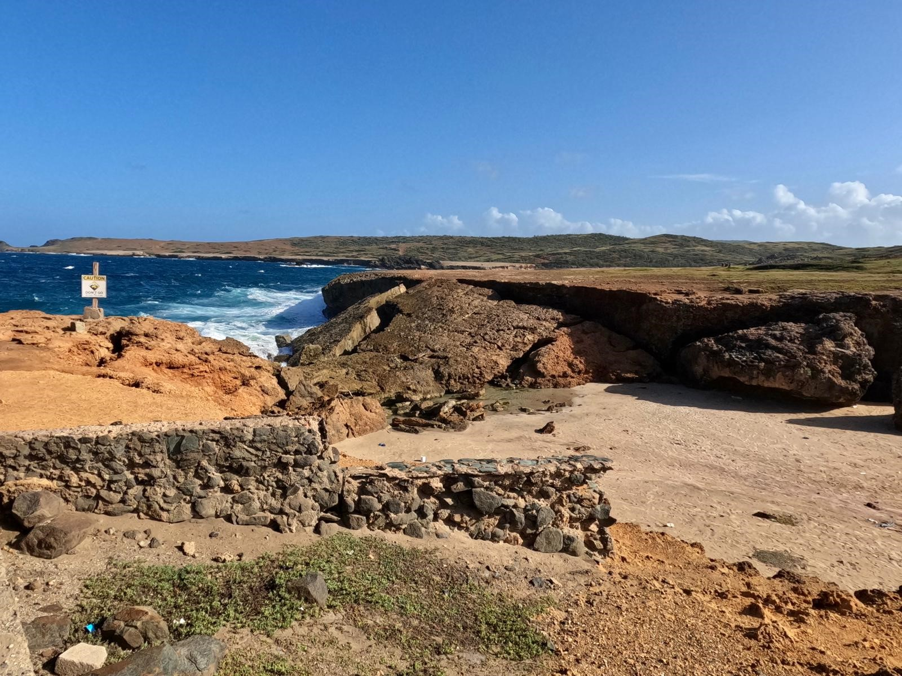

Parke Arikok

Index
Info
Gallerij
Gallerij

Deze kleinere brug bevindt zich vlakbij de restanten van Natural Bridge

Grotten van Guadirikiri

Voormalige Natural Bridge, deze stortte in 2005 in elkaar